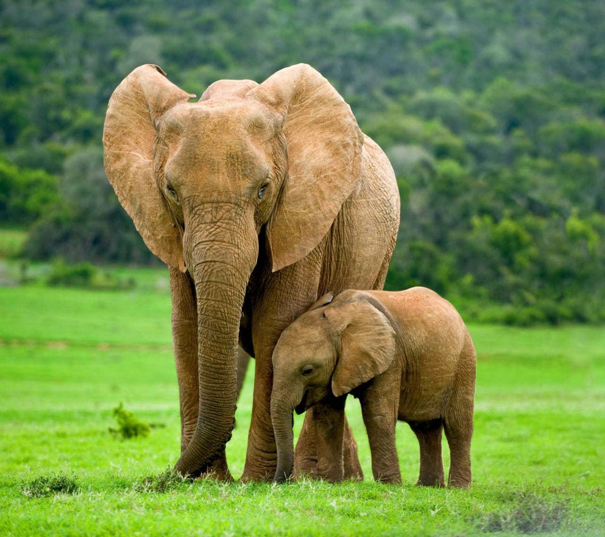
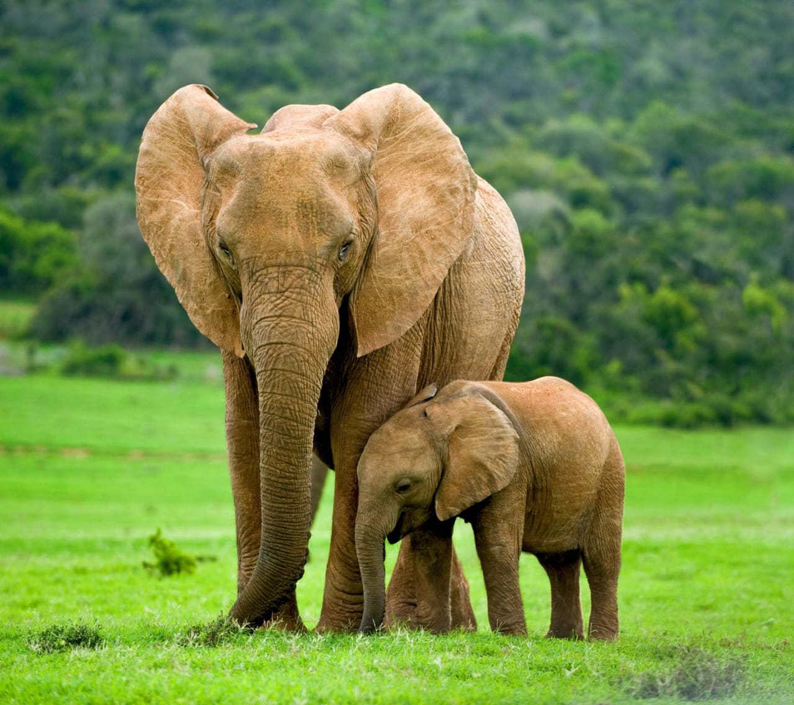

Les Animaux de Zakouma
Éléphants

 


Zakouma protège la plus grande population d'éléphants d'Afrique centrale, avec plus de 500 individus. Ces majestueux pachydermes jouent un rôle crucial dans l'écosystème du parc.
Lions


Les lions de Zakouma sont parmi les derniers représentants de la sous-espèce d'Afrique de l'Ouest. Le parc compte plusieurs fiertés qui peuvent être observées lors des safaris.
Girafes de Kordofan


La girafe de Kordofan, sous-espèce rare et menacée, trouve refuge à Zakouma. Le parc abrite l'une des dernières populations viables de cette espèce magnifique.
Gazelles et Antilopes


Zakouma abrite plusieurs espèces de gazelles et d'antilopes, dont la gazelle à front roux et l'élégante antilope rouanne. Ces herbivores sont essentiels à l'équilibre de l'écosystème.
Oiseaux

Avec plus de 400 espèces recensées, Zakouma est un paradis pour les ornithologues. Des marabouts aux calaos, en passant par les aigles pêcheurs, la diversité aviaire est exceptionnelle.
Autres Mammifères
Le parc abrite également des buffles, des hyènes, des phacochères, des babouins et de nombreuses autres espèces qui contribuent à la richesse de la biodiversité de Zakouma.